Uslovno formatiranje
Uslovno formatiranje vam omogućava da primenite različite stilove formatiranja (boja, font, dekoracija, gradijent) na ćelije radi rada sa podacima u tabeli: isticanje, sortiranje i prikaz podataka koji ispunjavaju potrebne kriterijume. Definišite odgovarajuće kriterijume i kreirajte nova pravila formatiranja, uređujte, upravljajte ili brišite postojeća pravila. Pravila uslovnog formatiranja koja podržava ONLYOFFICE Spreadsheet Editor su:
Value is, Top/Bottom, Average, Text, Date, Blank/Error, Duplicate/Unique, Data Bars, Color Scales, Icon Sets, Formula.
Za brz pristup, ili ako želite da izaberete neki od dostupnih unapred podešenih uslova, ili da pristupite svim dostupnim opcijama uslovnog formatiranja, idite na karticu Home i kliknite na dugme Conditional formatting .

Sve opcije Conditional Formatting dostupne su i na desnoj bočnoj traci u kartici Cell Settings. Kliknite na strelicu nadole kontrole Conditional Formatting da biste otvorili padajući meni koji sadrži sve dostupne opcije.
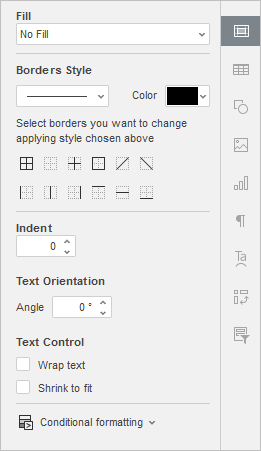
Da biste otvorili prozor New Formatting Rule, možete kliknuti desnim tasterom miša na bilo koju ćeliju i izabrati Conditional Formatting iz kontekstnog menija.
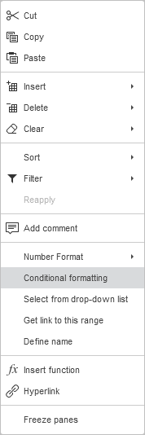
Da biste primenili uslov pravila formatiranja, izaberite opseg ćelija, zatim kliknite na dugme Conditional formatting na gornjoj traci sa alatkama ili kliknite na kontrolu Conditional Formatting u kartici Cell Settings na desnoj bočnoj traci i izaberite odgovarajuće pravilo iz padajućeg menija.
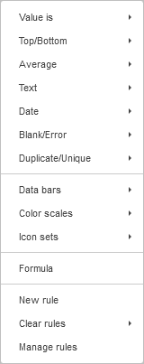
.Otvoriće se prozor New Formatting Rule kako biste podesili kriterijume za isticanje.
Pravilo formatiranja Value is
Pravilo formatiranja Value is koristi se za pronalaženje i isticanje ćelija koje ispunjavaju određeni uslov poređenja:
- Veće od
- Veće ili jednako
- Manje od
- Manje ili jednako
- Jednako
- Nije jednako
- Između
- Nije između
- Odeljak Rule prikazuje izabrano pravilo i izabrani uslov poređenja; klikom na strelicu nadole možete pristupiti listi dostupnih pravila i uslova. Koristite polje Select Data da biste definisali vrednost ćelije za poređenje. Koristite referencu na jednu ćeliju ili referencu sa funkcijom radnog lista kao što je =SUM(A1:B5).
- Odeljak Format nudi niz opcija za formatiranje ćelija. Možete izabrati jedan od dostupnih Presets.
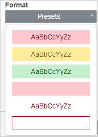
ili
prilagoditi formatiranje korišćenjem opcija formatiranja fonta (Bold, Italic, Underline, Strikeout), boje teksta, boje ispune i ivica. Koristite padajuću listu General da biste izabrali odgovarajući format brojeva (General, Number, Scientific, Accounting, Currency, Date, Time, Percentage). Polje Preview prikazuje kako će ćelija izgledati nakon formatiranja. Kliknite na Clear da biste obrisali sva podešavanja formatiranja.
Kliknite OK da biste potvrdili.
Primer ispod prikazuje unapred definisane kriterijume formatiranja, kao što su Greater than i Between. Ovo formatira planine sa visinom većom od 6,960 zelenom pozadinom i procenat između 5,000 i 6,500 ružičastom bojom.
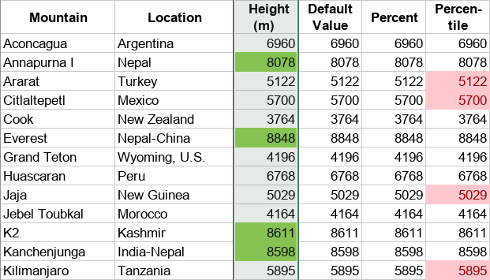
Pravilo formatiranja Top/Bottom
Pravilo Top/Bottom koristi se za pronalaženje i prikaz najvećih i najmanjih vrednosti u tabeli:
- Top 10 stavki
- Top 10%
- Bottom 10 stavki
- Bottom 10%
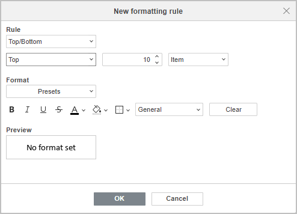
- Odeljak Rule prikazuje izabrano pravilo i izabrani uslov; klikom na strelicu nadole možete pristupiti listi dostupnih pravila i uslova, broju stavki (procentu) za prikaz, i izabrati da li želite da istaknete stavke ili procenat.
- Odeljak Format nudi niz opcija za formatiranje ćelija. Možete izabrati jedan od dostupnih Presets.
ili
prilagoditi formatiranje korišćenjem opcija formatiranja fonta (Bold, Italic, Underline, Strikeout), boje teksta, boje ispune i ivica. Koristite padajuću listu General da biste izabrali odgovarajući format brojeva (General, Number, Scientific, Accounting, Currency, Date, Time, Percentage). Polje Preview prikazuje kako će ćelija izgledati nakon formatiranja. Kliknite na dugme Clear da biste obrisali sva podešavanja formatiranja.
Kliknite OK da biste potvrdili.
Primer ispod prikazuje unapred definisane kriterijume formatiranja, kao što su Top 10% podešeno da prikaže top 20% vrednosti i Bottom 10 items. Ovo formatira Top 20% naknada u gradovima koje ste posetili narandžastom pozadinom i najniže vrednosti za gradove gde ste prodali mali broj knjiga plavom pozadinom.
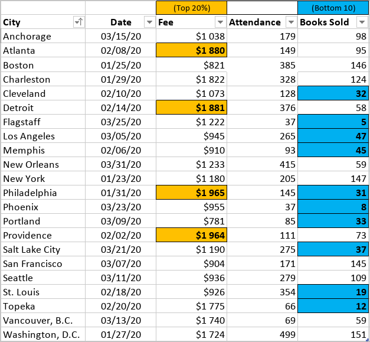
Pravilo formatiranja Average
Average se koristi za pronalaženje i prikaz vrednosti iznad ili ispod proseka ili standardne devijacije u oceni:
- Iznad
- Ispod
- Jednako ili iznad
- Jednako ili ispod
- 1 std dev iznad
- 1 std dev ispod
- 2 std dev iznad
- 2 std dev ispod
- 3 std dev iznad
- 3 std dev ispod
- Odeljak Rule prikazuje izabrano pravilo i izabrani uslov; klikom na strelicu nadole možete pristupiti listi dostupnih pravila i uslova.
- Odeljak Format nudi niz opcija za formatiranje ćelija. Možete izabrati jedan od dostupnih Presets.
ili
prilagoditi formatiranje korišćenjem opcija formatiranja fonta (Bold, Italic, Underline, Strikeout), boje teksta, boje ispune i ivica. Koristite padajuću listu General da biste izabrali odgovarajući format brojeva (General, Number, Scientific, Accounting, Currency, Date, Time, Percentage). Polje Preview prikazuje kako će ćelija izgledati nakon formatiranja. Kliknite na dugme Clear da biste obrisali sva podešavanja formatiranja.
Kliknite OK da biste potvrdili.
Primer ispod prikazuje unapred definisane kriterijume formatiranja, kao što je Above average. Ovo formatira gradove gde je posećenost bila iznad proseka zelenom pozadinom.
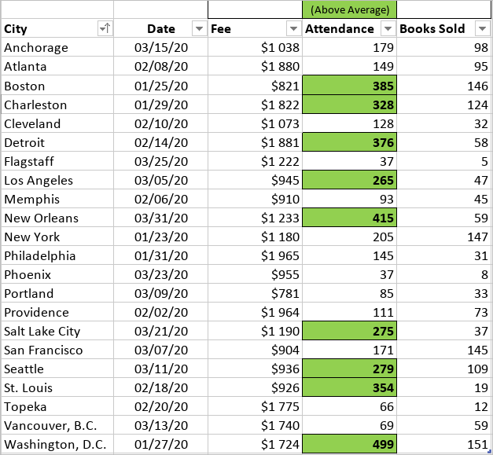
Pravilo formatiranja Text
Pravilo formatiranja Text koristi se za pronalaženje i isticanje ćelija koje sadrže određeni tekst i ispunjavaju jedan od dostupnih uslova formatiranja:
- Sadrži
- Ne sadrži
- Počinje sa
- Završava se sa
- Odeljak Rule prikazuje izabrano pravilo i izabrani uslov formatiranja; klikom na strelicu nadole možete pristupiti listi dostupnih pravila i uslova. Koristite polje Select Data da biste definisali vrednost ćelije za poređenje. Koristite referencu na jednu ćeliju ili referencu sa funkcijom radnog lista kao što je =SUM(A1:B5).
- Odeljak Format nudi niz opcija za formatiranje ćelija. Možete izabrati jedan od dostupnih Presets.
ili
prilagoditi formatiranje korišćenjem opcija formatiranja fonta (Bold, Italic, Underline, Strikeout), boje teksta, boje ispune i ivica. Koristite padajuću listu General da biste izabrali odgovarajući format brojeva (General, Number, Scientific, Accounting, Currency, Date, Time, Percentage). Polje Preview prikazuje kako će ćelija izgledati nakon formatiranja. Kliknite na dugme Clear da biste obrisali sva podešavanja formatiranja.
Kliknite OK da biste potvrdili.
Primer ispod prikazuje unapred definisane kriterijume formatiranja, kao što je Contains. Ovo formatira ćelije koje sadrže Denmark ružičastom pozadinom kako bi se istakla prodaja za određeni region.
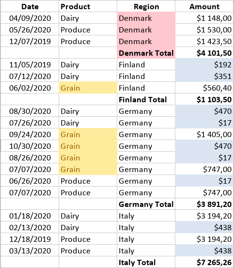
Pravilo formatiranja Date
Pravilo formatiranja Date koristi se za pronalaženje i isticanje ćelija koje sadrže određeni datum i ispunjavaju jedan od dostupnih uslova formatiranja:
- Juče
- Danas
- Sutra
- U poslednjih 7 dana
- Prošle nedelje
- Ove nedelje
- Sledeće nedelje
- Prošlog meseca
- Ovog meseca
- Sledećeg meseca
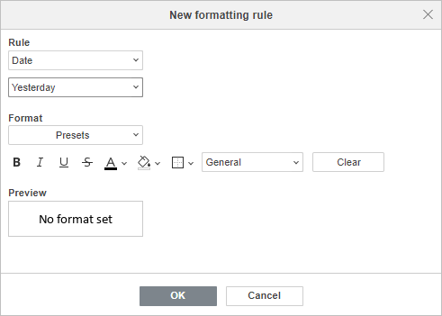
- Odeljak Rule prikazuje izabrano pravilo i izabrani uslov formatiranja; klikom na strelicu nadole možete pristupiti listi dostupnih pravila i uslova.
- Odeljak Format nudi niz opcija za formatiranje ćelija. Možete izabrati jedan od dostupnih Presets.
ili
prilagoditi formatiranje korišćenjem opcija formatiranja fonta (Bold, Italic, Underline, Strikeout), boje teksta, boje ispune i ivica. Koristite padajuću listu General da biste izabrali odgovarajući format brojeva (General, Number, Scientific, Accounting, Currency, Date, Time, Percentage). Polje Preview prikazuje kako će ćelija izgledati nakon formatiranja. Kliknite na dugme Clear da biste obrisali sva podešavanja formatiranja.
Kliknite OK da biste potvrdili.
Primer ispod prikazuje unapred definisane kriterijume formatiranja, kao što je Last month. Ovo formatira ćelije koje sadrže datume iz prethodnog meseca žutom pozadinom kako bi se istakla prodaja za određeni vremenski period.
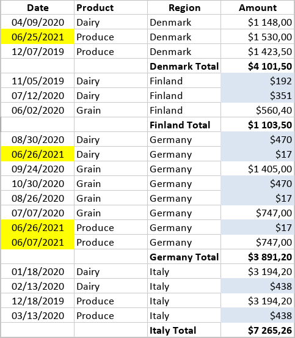
Pravilo formatiranja Blank/Error
Pravilo formatiranja Blank/Error koristi se za pronalaženje i isticanje ćelija koje sadrže ili ne sadrže prazna polja i greške:
- Sadrži prazna polja
- Ne sadrži prazna polja
- Sadrži greške
- Ne sadrži greške
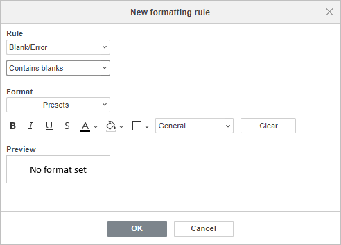
- Odeljak Rule prikazuje izabrano pravilo i izabrani uslov formatiranja; klikom na strelicu nadole možete pristupiti listi dostupnih pravila i uslova.
- Odeljak Format nudi niz opcija za formatiranje ćelija. Možete izabrati jedan od dostupnih Presets.
ili
prilagoditi formatiranje korišćenjem opcija formatiranja fonta (Bold, Italic, Underline, Strikeout), boje teksta, boje ispune i ivica. Koristite padajuću listu General da biste izabrali odgovarajući format brojeva (General, Number, Scientific, Accounting, Currency, Date, Time, Percentage). Polje Preview prikazuje kako će ćelija izgledati nakon formatiranja. Kliknite na dugme Clear da biste obrisali sva podešavanja formatiranja.
Kliknite OK da biste potvrdili.
Primer ispod prikazuje unapred definisane kriterijume formatiranja, kao što je Contains blanks. Ovo formatira prazne ćelije u koloni koja prikazuje broj prodaja svetloplavom pozadinom.
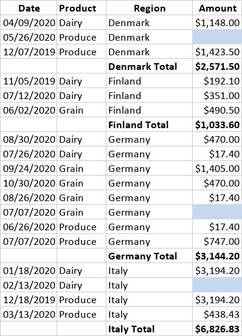
Pravilo formatiranja Duplicate/Unique
Pravilo formatiranja Duplicate/Unique koristi se za prikaz duplih vrednosti u tabeli i u opsegu ćelija definisanom uslovnim formatiranjem; dostupne opcije su:
- Duplikat
- Jedinstveno
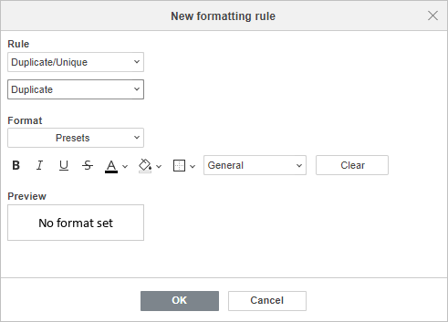
- Odeljak Rule prikazuje izabrano pravilo i izabrani uslov formatiranja; klikom na strelicu nadole možete pristupiti listi dostupnih pravila i uslova.
- Odeljak Format nudi niz opcija za formatiranje ćelija. Možete izabrati jedan od dostupnih Presets.
ili
prilagoditi formatiranje korišćenjem opcija formatiranja fonta (Bold, Italic, Underline, Strikeout), boje teksta, boje ispune i ivica. Koristite padajuću listu General da biste izabrali odgovarajući format brojeva (General, Number, Scientific, Accounting, Currency, Date, Time, Percentage). Polje Preview prikazuje kako će ćelija izgledati nakon formatiranja. Kliknite na dugme Clear da biste obrisali sva podešavanja formatiranja.
Kliknite OK da biste potvrdili.
Primer ispod prikazuje unapred definisane kriterijume formatiranja, kao što je Duplicate. Ovo formatira duplirane kontakte žutom pozadinom.
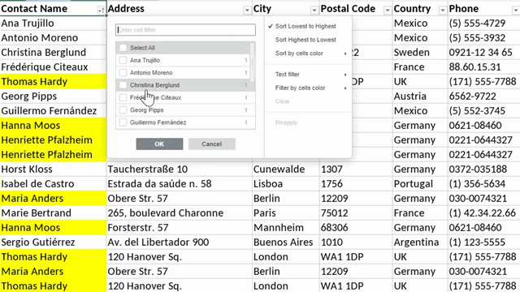
Formatiranje Data Bars
Data Bars se koriste za poređenje vrednosti u obliku dijagrama (trake).
Na primer, uporedite visine planina prikazivanjem njihove podrazumevane vrednosti u metrima (zelena traka) i iste vrednosti u opsegu od 0 do 100 procenata (žuta traka); percentil kada ekstremne vrednosti „iskrivljuju“ podatke (svetloplava traka); samo trake umesto brojeva (plava traka); analiza podataka u dve kolone da biste videli i brojeve i trake (crvena traka).
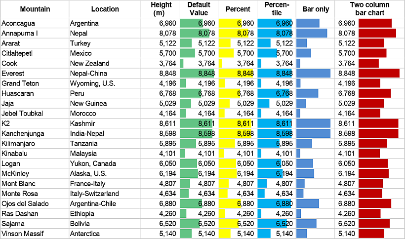
Formatiranje Color Scales
Color Scales se koriste za isticanje vrednosti u tabeli putem gradijentne skale.
Primer ispod prikazuje kolone od „Dairy” do „Beverage” koje prikazuju podatke putem dvobojne skale sa varijacijom od žute do crvene; kolona „Total Sales” prikazuje podatke putem trobojne skale od najmanjeg iznosa u crvenoj do najvećeg iznosa u plavoj boji.
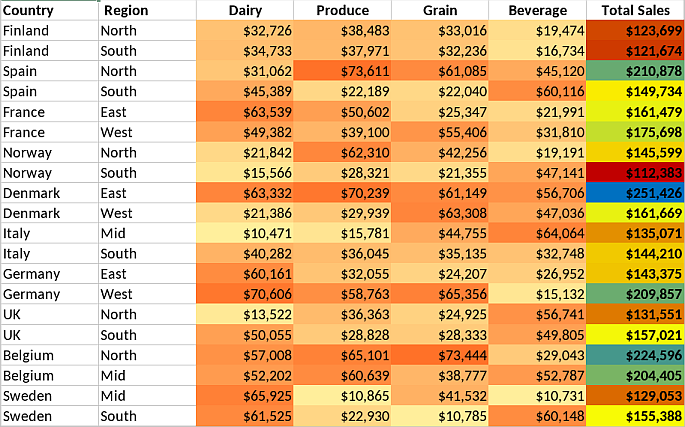
Formatiranje Icon Sets
Icon Sets se koriste za prikaz podataka tako što se u ćeliji koja ispunjava kriterijume prikazuje odgovarajuća ikonica. Spreadsheet Editor podržava različite skupove ikonica:
- Directional
- Shapes
- Indicators
- Ratings
U nastavku su navedeni primeri za najčešće slučajeve uslovnog formatiranja sa skupovima ikonica.
- Umesto brojeva i procentualnih vrednosti, vidite formatirane ćelije sa odgovarajućim strelicama koje prikazuju ostvarenje prihoda u koloni „Status” i dinamiku trendova u budućnosti u koloni „Trend”.
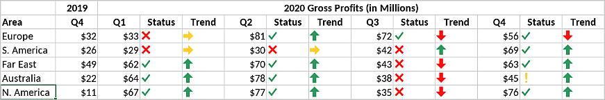
- Umesto ćelija sa ocenama u rasponu od 1 do 5, alat za uslovno formatiranje prikazuje odgovarajuće ikonice iz legende na vrhu za svaki bicikl u listi ocena.
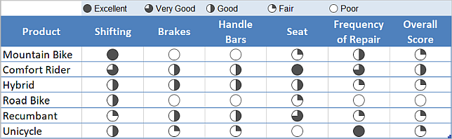
- Umesto ručnog poređenja dinamike mesečnog profita, formatirane ćelije imaju odgovarajuću crvenu ili zelenu strelicu.
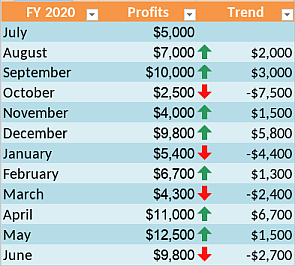
- Koristite sistem semafora (crveni, žuti i zeleni krugovi) za vizuelizaciju dinamike prodaje.
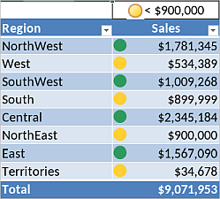
Formatiranje korišćenjem formula
Formula-based formatiranje koristi različite formule za filtriranje podataka prema specifičnim potrebama.
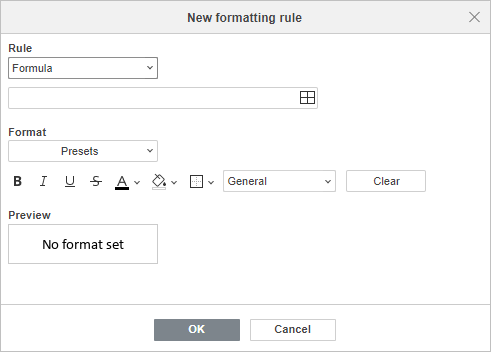
- Odeljak Rule prikazuje izabrano pravilo i izabrani uslov formatiranja; klikom na strelicu nadole možete pristupiti listi dostupnih pravila i uslova. Koristite polje Select Data da biste definisali vrednost ćelije za poređenje. Koristite referencu na jednu ćeliju ili referencu sa funkcijom radnog lista kao što je =SUM(A1:B5).
- Odeljak Format nudi niz opcija za formatiranje ćelija. Možete izabrati jedan od dostupnih Presets.
ili
prilagoditi formatiranje korišćenjem opcija formatiranja fonta (Bold, Italic, Underline, Strikeout), boje teksta, boje ispune i ivica. Koristite padajuću listu General da biste izabrali odgovarajući format brojeva (General, Number, Scientific, Accounting, Currency, Date, Time, Percentage). Polje Preview prikazuje kako će ćelija izgledati nakon formatiranja. Kliknite na dugme Clear da biste obrisali sva podešavanja formatiranja.
Kliknite OK da biste potvrdili.
Primeri ispod ilustruju mogućnosti formatiranja putem formula.
Zasenčite naizmenične redove,
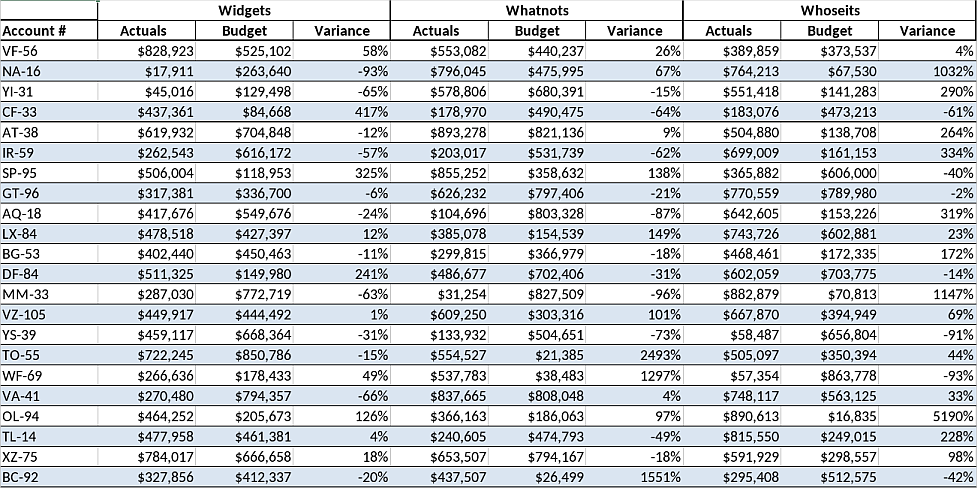
Uporedite sa referentnom vrednošću (ovde je to $55) i prikažite da li je veća (zeleno) ili manja (crveno),
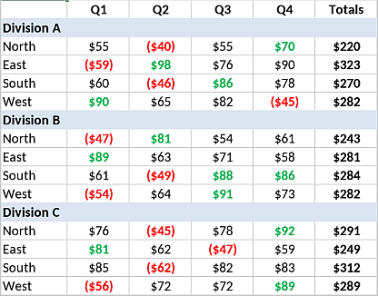
Istaknite redove koji ispunjavaju potrebne kriterijume (pogledajte koje ciljeve treba da ostvarite ovog meseca; u ovom slučaju to je oktobar),
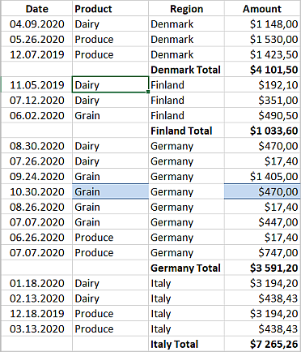
Ili istaknite samo jedinstvene redove
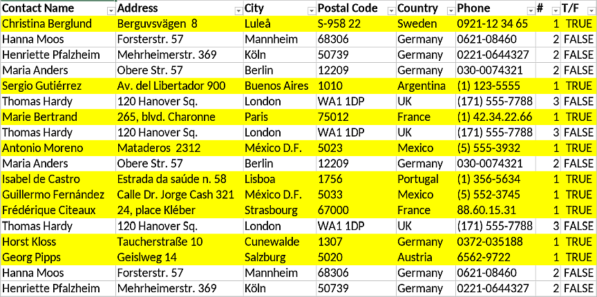
Kreiraj novo pravilo
Kada treba da kreirate novo pravilo za uslovno formatiranje, to možete uraditi na jedan od sledećih načina:
- Idite na karticu Home, kliknite dugme Conditional Formatting i iz padajućeg menija izaberite New Rule.
- Kliknite karticu Cell Settings na desnoj bočnoj traci i kliknite strelicu nadole na kontroli Conditional formatting, zatim iz padajućeg menija izaberite New Rule.
- Desnim klikom na bilo koju ćeliju iz kontekstnog menija izaberite Conditional Formatting.
Prozor New Formatting Rule će se odmah otvoriti. Podesite potrebne opcije da biste konfigurisali pravilo kao što je opisano iznad i kliknite OK da biste potvrdili.
Upravljanje pravilima uslovnog formatiranja
Kada podesite pravila uslovnog formatiranja, možete ih lako uređivati, brisati i pregledati koristeći opciju Manage Rule klikom na dugme Conditional Formatting na kartici Home, ili na kontrolu Conditional formatting na desnoj bočnoj traci u kartici Cell Settings. Pojaviće se prozor Conditional Formatting:
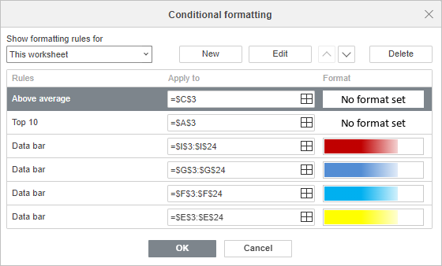
Show formatting rules for omogućava izbor pravila koja želite da prikažete:
- Current selection
- This worksheet
- This table
- This pivot
Sva pravila pronađena u izabranom opsegu biće prikazana po redosledu prioriteta (od vrha ka dnu) pod Rules. Polje Apply to prikazuje opseg na koji se pravilo primenjuje; opseg možete promeniti klikom na ikonicu Select data . Polje Format prikazuje primenjeno pravilo formatiranja.
- Koristite dugme New da biste dodali novo pravilo.
- Koristite dugme Edit ako želite da izmenite postojeće pravilo; otvoriće se prozor Edit Formatting Rule. Izmenite pravilo po potrebi i kliknite OK.
- Koristite strelice gore i dole da promenite mesto u redosledu prioriteta.
- Kliknite Delete da uklonite pravilo.
- Kliknite OK da biste potvrdili.
Uređivanje uslovnog formatiranja
Uređivanje Value is, Top/Bottom, Average, Text, Date, Blank/Error, Duplicate/Unique, Formula
Prozor Edit Formatting Rule za Value is, Top/Bottom, Average, Text, Date, Blank/Error, Duplicate/Unique, Formula nudi niz standardnih podešavanja:
- Kliknite Rule da promenite pravilo i prethodno primenjeni uslov formatiranja;
- Koristite polje Select data da promenite opseg ćelija na koji se referiše (za Value is, Text i Formula);
- Koristite opcije formata fonta i ćelije (Bold, Italic, Underline, Strikeout), Text color, Fill color i Borders.
- Kliknite padajuću listu General da izaberete odgovarajući format brojeva (General, Number, Scientific, Accounting, Currency, Date, Time, Percentage).
- Polje Preview prikazuje kako će ćelija izgledati nakon formatiranja.
- Kliknite OK da biste potvrdili.
Uređivanje Data Bars
Prozor Edit Formatting Rule za Data Bar nudi sledeće opcije:
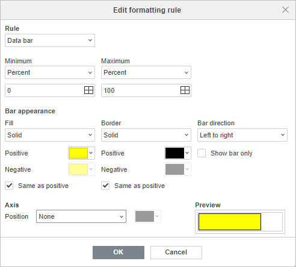
- Rule – da promenite pravilo i prethodno primenjeni uslov formatiranja;
-
Minimum/Maximum – da definišete tip minimalnih i maksimalnih vrednosti za trake podataka ako želite da se fokusirate na razlike. Tipovi maksimalnih/minimalnih vrednosti:
- Minimum/Maximum
- Number
- Percent
- Formula
- Percentile
- Automatic
Izaberite Automatic da biste postavili minimalnu vrednost na nulu, a maksimalnu vrednost na najveći broj u opsegu. Automatic je podrazumevana opcija.
Kliknite polje Select data da biste promenili opseg ćelija za minimalne/maksimalne vrednosti.
- Bar Appearance
Prilagodite izgled Data Bar elemenata izborom tipa i boje ispune i ivice, kao i smera traka.
- Postoje dve opcije tipa Fill: Solid ispunа i Gradient ispuna. Koristite strelicu nadole ispod da izaberete boju ispune za trake koje predstavljaju pozitivne i negativne vrednosti.
- Postoje dve opcije tipa Border: Solid i None. Koristite strelicu nadole ispod da izaberete boju ivice za trake koje predstavljaju pozitivne i negativne vrednosti.
- Omogućite potvrdni okvir Same as positive da biste prikazali pozitivne i negativne vrednosti istom bojom. Podešavanja boje za Negative vrednosti biće onemogućena kada je ovaj okvir označen.
- Koristite Bar Direction da promenite smer traka podataka. Context je podrazumevana opcija, ali možete izabrati Left to right ili Right to left u zavisnosti od načina na koji želite da prikažete podatke.
- Omogućite potvrdni okvir Show bar only da biste prikazali samo trake podataka u ćelijama i sakrili vrednosti.
- Axis
Izaberite Position ose traka podataka u odnosu na sredinu ćelije kako biste razdvojili pozitivne i negativne vrednosti. Postoje tri opcije položaja ose: Automatic, Cell midpoint i None. Kliknite strelicu nadole u polju boje da biste podesili boju ose.
- Polje Preview prikazuje kako će ćelija izgledati nakon formatiranja.
- Kliknite OK da biste potvrdili.
Uređivanje Color Scales
Uređivanje 2 Color Scale formatiranja
Prozor Edit Formatting Rule za 2 Color Scale nudi sledeće opcije formatiranja:
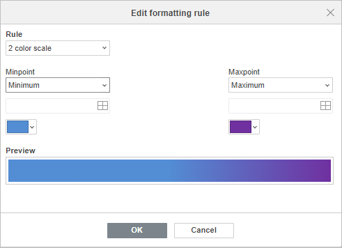
- Kliknite Rule da promenite pravilo i prethodno primenjeni uslov formatiranja;
-
Kliknite Minpoint/Maxpoint da definišete tip vrednosti za minimalnu i maksimalnu tačku skale boja ako želite da se fokusirate na razlike. Tipovi vrednosti za minpoint/maxpoint:
- Minimum/Maximum
- Number
- Percent
- Formula
- Percentile
Minimum/Maximum je podrazumevana opcija.
- Koristite polje Select data da biste promenili opseg ćelija za minimalnu i maksimalnu tačku.
- Koristite strelicu nadole ispod da izaberete boju za svaku skalu.
- Polje Preview prikazuje kako će ćelija izgledati nakon formatiranja.
- Kliknite OK da biste potvrdili.
Uređivanje 3 Color Scale formatiranja
Prozor Edit Formatting Rule za 3 Color Scale nudi sledeće opcije formatiranja:
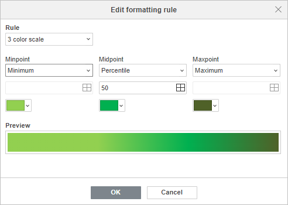
- Kliknite Rule da promenite pravilo i prethodno primenjeni uslov formatiranja;
-
Kliknite Minpoint/Midpoint/Maxpoint da definišete tip vrednosti za minimalnu, srednju i maksimalnu tačku skale boja ako želite da se fokusirate na razlike.
Tipovi vrednosti za minpoint/maxpoint:
- Minimum/Maximum
- Number
- Percent
- Formula
- Percentile
Tipovi vrednosti za midpoint:
- Number
- Percent
- Formula
- Percentile
Minimum/Percentile/Maximum je podrazumevana opcija za formatiranje 3 Color Scale.
- Koristite polje Select data da biste promenili opseg ćelija za minimalnu, srednju i maksimalnu tačku.
- Koristite strelicu nadole ispod da izaberete boju za svaku skalu.
- Polje Preview prikazuje kako će ćelija izgledati nakon formatiranja.
- Kliknite OK da biste potvrdili.
Uređivanje Icon sets
Prozor Edit Formatting Rule za Icon Sets nudi sledeće opcije formatiranja:
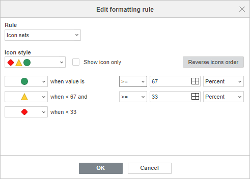
- Kliknite Rule da promenite pravilo i prethodno primenjeni uslov formatiranja;
- Kliknite Icon Style da prilagodite stil ikonica za kreirano pravilo.
- Omogućite Show icon only da biste prikazali samo ikonice u ćelijama i sakrili vrednosti.
- Omogućite Reverse Icons Order da promenite redosled ikonica i rasporedite ih od najniže ka najvišoj vrednosti. Podrazumevano, ikonice su raspoređene od najviše ka najnižoj vrednosti.
- Podesite pravilo za svaku ikonicu i prilagodite operatore poređenja (greater than or equal to, greater than), granične vrednosti (threshold) i tip vrednosti (Number, Percent, Formula, Percentile) da biste rasporedili vrednosti u niz od vrha ka dnu. Podrazumevano, vrednosti su podeljene jednako.
- Kliknite OK da biste potvrdili.
Brisanje uslovnog formatiranja
Da biste obrisali sva uslovna formatiranja, idite na karticu Home, kliknite dugme Conditional Formatting , ili kliknite kontrolu Conditional Formatting na kartici Cell Settings na desnoj bočnoj traci, zatim u padajućem meniju kliknite Clear Rules i izaberite jednu od odgovarajućih radnji:
- Current selection
- This worksheet
- This table
- This pivot
Molimo imajte u vidu da ovaj vodič sadrži grafičke informacije iz Microsoft Office radne sveske Conditional Formatting Samples and guidelines. Isprobajte navedena pravila tako što ćete preuzeti radnu svesku i otvoriti je u Spreadsheet Editor-u.